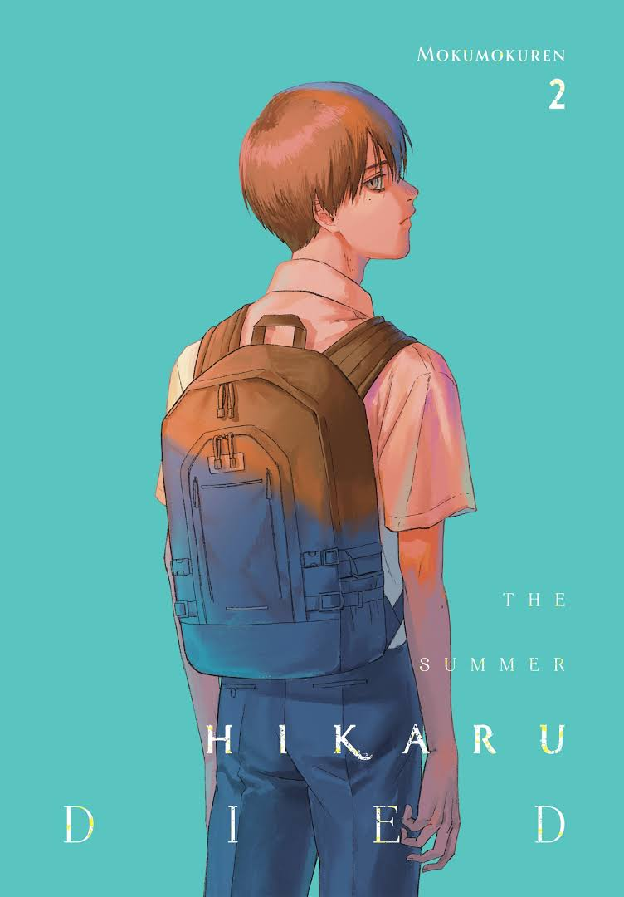
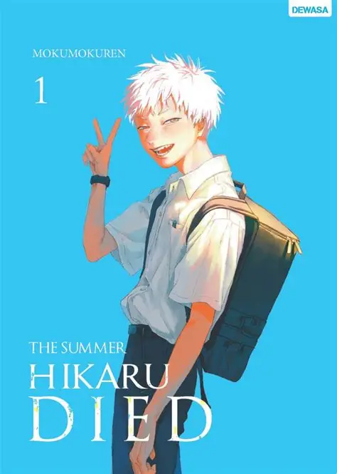
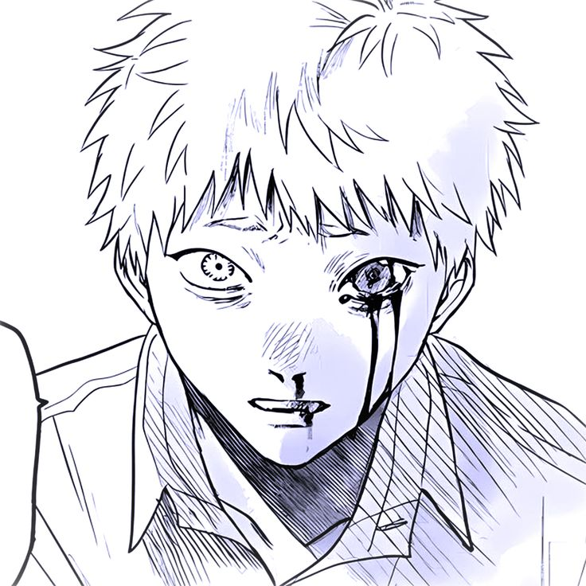
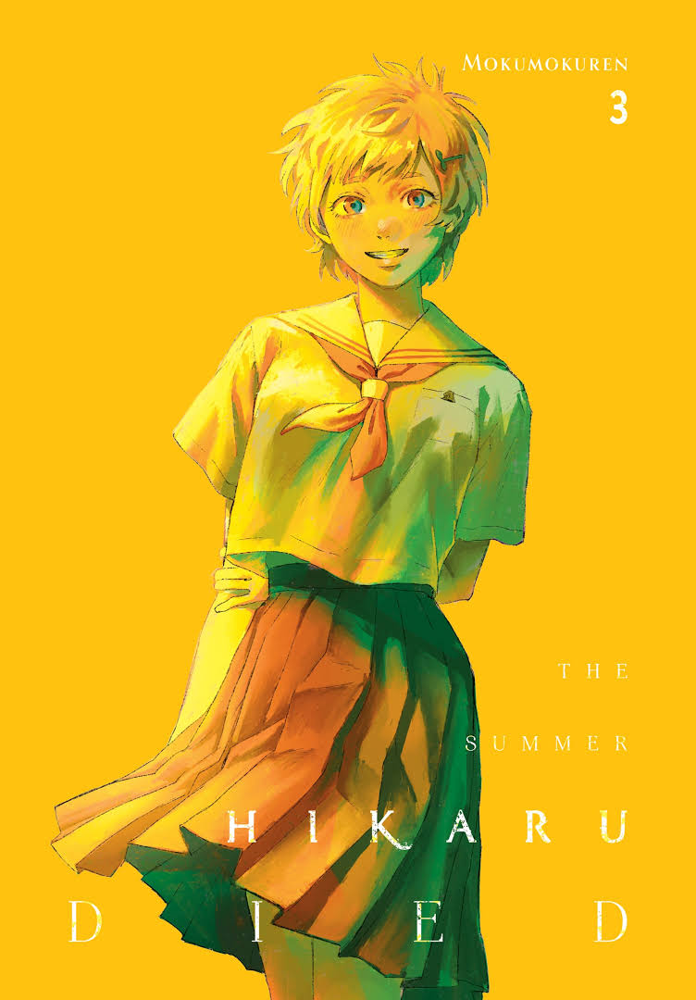
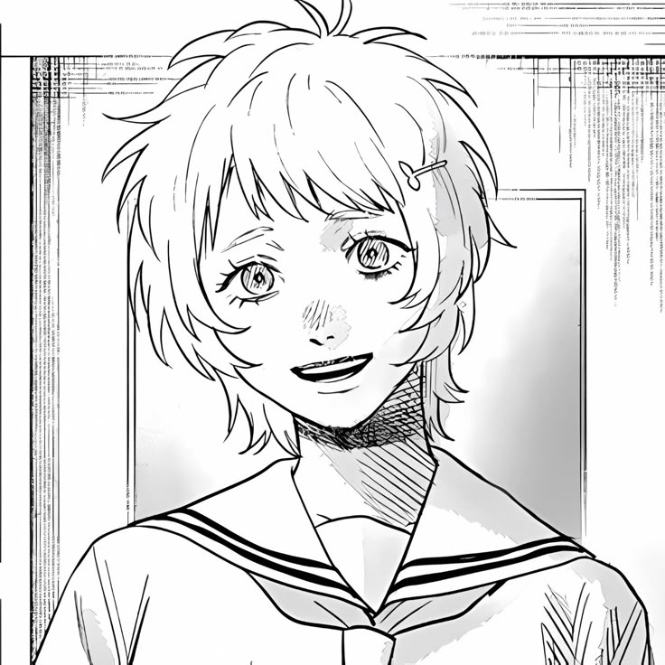
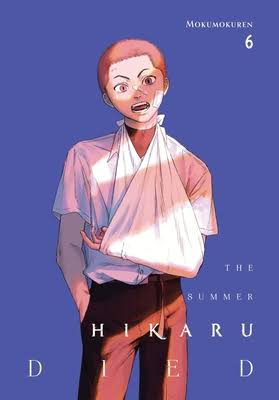
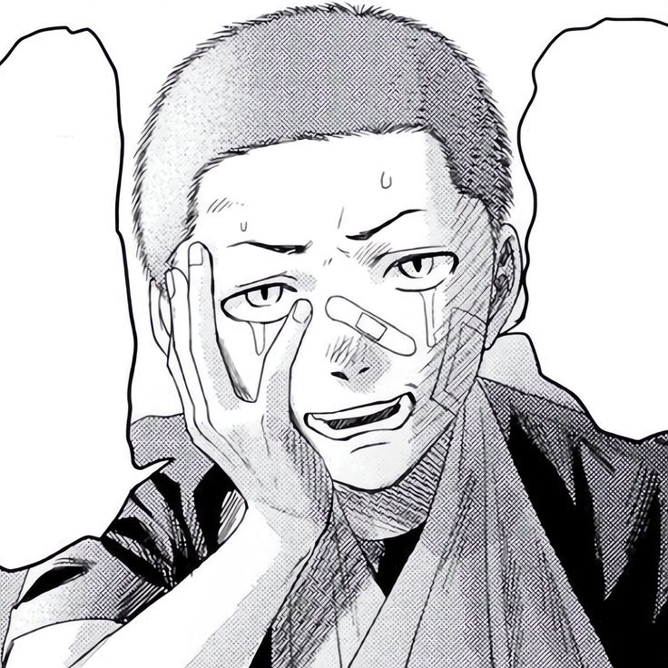
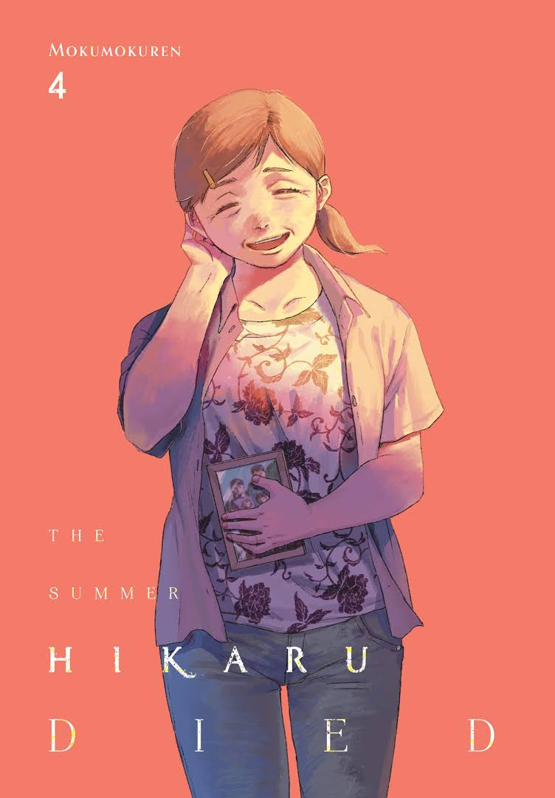
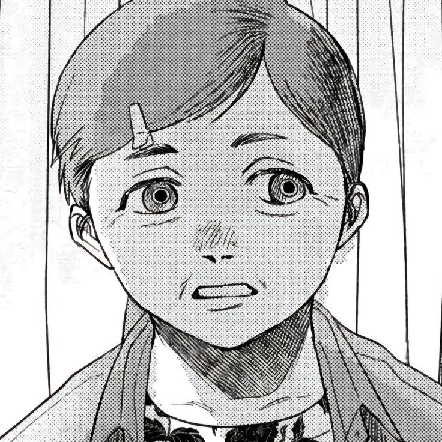

Em suma, o anime se resume em:
"O Verão em que Hikaru Morreu" é um mangá de terror, mistério e drama sobrenatural criado por Mokumokuren. A história é conhecida por sua atmosfera sombria, tensão psicológica e o toque de romance (BL - Boys' Love) que permeia a relação central.
A trama se passa em uma pequena e pacata vila rural japonesa e foca na profunda amizade entre dois adolescentes: Yoshiki e Hikaru. Eles cresceram juntos e são praticamente inseparáveis.
No entanto, tudo muda drasticamente quando Hikaru desaparece na montanha durante o inverno. Ele retorna algum tempo depois, aparentemente ileso, mas completamente transformado.
Yoshiki é o único que percebe a assustadora verdade: seu melhor amigo Hikaru está morto, e o que voltou em seu lugar é uma entidade sobrenatural (às vezes descrita como alienígena ou uma criatura da montanha) que assumiu o corpo e as memórias de Hikaru.
Personagens:

Yoshiki Tsujinaka

Protagonista humano da história.
Adolescente introspectivo, leal e emocionalmente complexo.
Tem uma amizade profunda com Hikaru, que beira o amor — e isso o coloca em conflito quando percebe que o “Hikaru” que voltou não é mais humano.
Ao longo da trama, Yoshiki vive um dilema entre aceitar a criatura que tomou o lugar do amigo ou confrontar a verdade e o luto.

“Hikaru” (Entidade)

Ser sobrenatural que assume a forma, memórias e sentimentos do verdadeiro Hikaru.
Apesar de parecer humano, tem comportamentos estranhos e uma presença inquietante.
Oscila entre carinho genuíno por Yoshiki e uma natureza fria, quase predatória.
Sua existência levanta questões sobre identidade, afeto e o que significa “ser” alguém.

Yamagishi Asako

Colega de classe do Yoshiki e Hikaru.
Alta, cabelo castanho claro na altura do queixo, olhos verde-azulados e grampo azul.
Consegue ouvir espíritos e impurezas, mas não vê-los.
Forte emocionalmente, mesmo após ser atacada por “Hikaru” não guarda rancor.
Se preocupa com os amigos e tenta protegê-los, mesmo agindo impulsivamente às vezes.

Maki Yuuta

Colega de classe do Yoshiki, conhecido por ser o mais brincalhão do grupo.
Tem a cabeça raspada e vive fazendo piadas — é o “palhaço” da turma.
Apesar do jeito zoeiro, é leal e perceptivo.
Vive implicando com Yuuki, mas no fundo se preocupa com ela.
Traz leveza à história, contrastando com o clima sombrio da vila.

Kurebayashi Rie

Dona de casa da vila que, no entanto, é uma figura misteriosa e crucial na trama.
Tem a capacidade de sentir e ver seres e espíritos sobrenaturais — um poder que outras pessoas da vila não possuem.
Avisa Yoshiki sobre a verdadeira natureza de "Hikaru", alertando-o para o perigo que ele representa.
Sua visão sobre os acontecimentos é séria e alarmante, contrastando com a tentativa de Yoshiki de ignorar a situação.
Conhece o mundo do oculto e das "impurezas" que assombram a região, oferecendo alguma orientação e até ajuda.
É uma figura materna e protetora, preocupada com a segurança de Yoshiki e da vila, especialmente devido a um passado trágico que a conecta a essas entidades.